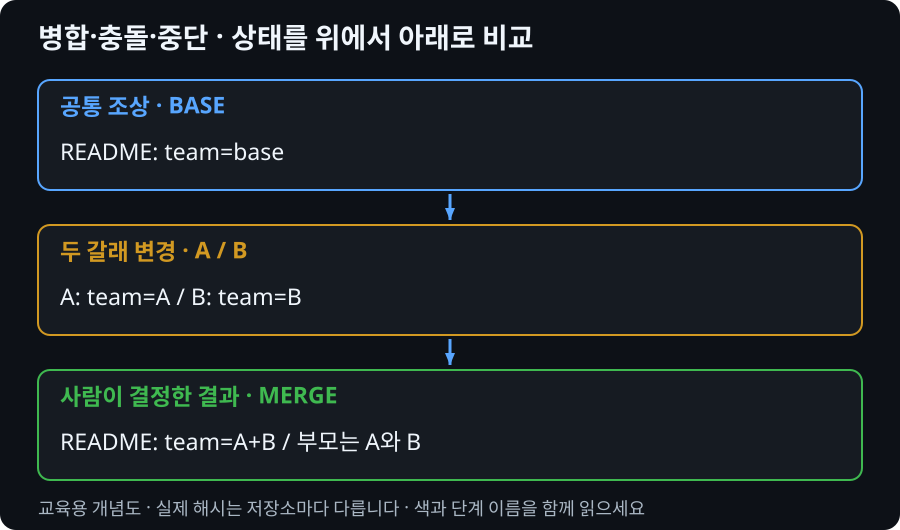

충돌은 문법 문제가 아니라 최종 내용의 결정이다
같은 줄을 A와 B가 바꾸면 Git은 제품 요구사항을 알 수 없습니다. 충돌을 해결했다는 것은 표시를 지운 것뿐 아니라 최종 결과의 의미를 결정했다는 뜻입니다.
내부에서는 어떤 일이 일어날까?
일반적인 3-way merge는 공통 조상과 양쪽 끝 커밋을 비교합니다. 서로 겹치지 않는 변경은 자동으로 합칠 수 있지만 같은 부분에 양립하기 어려운 변경이 있으면 사람의 결정을 기다립니다.
충돌 중 index에는 해결되지 않은 파일의 조상·현재 쪽·상대 쪽 항목이 남을 수 있습니다. git ls-files -u로 단계 번호 1, 2, 3을 관찰합니다. 해결한 파일을 add하면 최종 내용으로 일반 index 항목이 만들어집니다.
merge commit은 두 부모를 연결합니다. add는 충돌 해결 표시일 뿐 프로그램의 의미를 검사하지 않습니다. marker가 없어도 기능이 잘못될 수 있으므로 실행 결과를 확인해야 합니다.

1. 시작 상태 만들기
아래 명령은 새 연습 폴더에서 Markdown 파일로 상황을 직접 만듭니다. PowerShell에서 한 줄씩 실행하세요. Set-Content는 파일을 덮어쓰므로 기존 프로젝트에서 실행하지 않습니다. 예상 오류 외의 실패가 나오면 중단합니다. 전체 직접 실습 MD 다운로드
# Windows PowerShell. 한 줄씩 실행하고 실패하면 멈춥니다.
$practiceRoot = Join-Path ([IO.Path]::GetTempPath()) ("git-md-" + [guid]::NewGuid())
New-Item -ItemType Directory -Path $practiceRoot -ErrorAction Stop
Set-Location $practiceRoot
git init -b main
git config user.name "Practice Student"
git config user.email "practice@example.invalid"
# 아래 설정은 이 새 연습 저장소에만 적용합니다.
git config commit.gpgsign false
git config core.autocrlf false
git config core.whitespace cr-at-eol
git config core.hooksPath .no-hooks
Set-Content README.md "team=base"
Set-Content notes.md "note=base"
git add README.md notes.md
git commit -m "docs: base"
git status --short
git switch -c feature/a
Set-Content README.md "team=A"
git add README.md
git commit -m "docs: A"
git switch main
git switch -c feature/b
Set-Content README.md "team=B"
git add README.md
git commit -m "docs: B"
# 같은 줄을 다르게 수정했으므로 충돌이 나야 합니다.
git merge feature/a
git status --shortfeature/b에서 feature/a를 병합하다 멈춘 상태입니다. ours는 현재 B, theirs는 합치려는 A입니다. 사람 이름으로 외우지 말고 현재 체크아웃과 병합 방향을 읽습니다.
2. 진단하고 예상하기
git status git diff git ls-files -u git log --oneline --graph --all
명령 실행 전 어떤 파일·참조가 달라질지 말하고, 실행 후 출력과 비교합니다.
3. 복구 방법 선택
목표가 잘못된 병합을 취소하는 것이라면 commit하기 전 abort를 선택합니다. 합치는 것이 맞다면 양쪽 의도를 확인해 최종 파일을 편집합니다. 이미 끝난 merge에는 abort가 아니라 별도의 취소 판단이 필요합니다.
판단 후 복구 절차 펼치기
# 첫 번째 연습: 아직 commit 전의 병합 취소 git merge --abort git status # 두 번째 연습: 같은 충돌을 다시 만들어 해결 git merge feature/a # README를 편집기로 열어 team=A+B 한 줄만 남김 git add README.md git diff --staged git diff --check git commit -m "merge: agree team message"
4. 복구 성공을 검증하기
git ls-files -u git status git log -1 --format='%h %p %s' Get-Content README.md
ls-files -u 결과가 비어 있고 clean 상태여야 합니다. 최신 커밋에 부모 해시 두 개가 보이며 README는 A+B입니다. 실제 코드 충돌에서는 해당 기능의 테스트와 실행 결과까지 확인합니다.
병합 전 미커밋 변경이 있었다면 abort로 완전히 되돌릴 수 있다고 보장할 수 없습니다. 시작 전 보존해야 합니다. ours/theirs의 의미는 rebase 같은 다른 작업에서 직관과 달라질 수 있으므로 이 수업의 merge 문맥과 구분합니다.
5. 조건을 바꿔 설명하기
직접 실습 MD의 delete-conflict 상황에서는 B는 README를 삭제했고 A는 수정했습니다. 문서가 계속 필요하다고 합의하면 현재 남은 A 내용 확인 후 add·commit, 삭제하기로 합의하면 git rm 후 commit합니다. 양쪽이 새 파일을 같은 이름으로 만든 경우는 내용 병합 또는 역할별 파일 분리가 필요합니다.
제출할 문서는 없습니다. 화면에서 근거를 가리키며 “현재 상태 → 선택 이유 → 남은 작업”을 설명합니다.
공식 문서와 연결
Git merge 공식 문서에서 명령의 입력·출력 범위를 확인합니다. 예제는 PowerShell 기준입니다. 실제 해시·브랜치명은 출력에서 확인하며 그대로 추측해서 입력하지 않습니다.